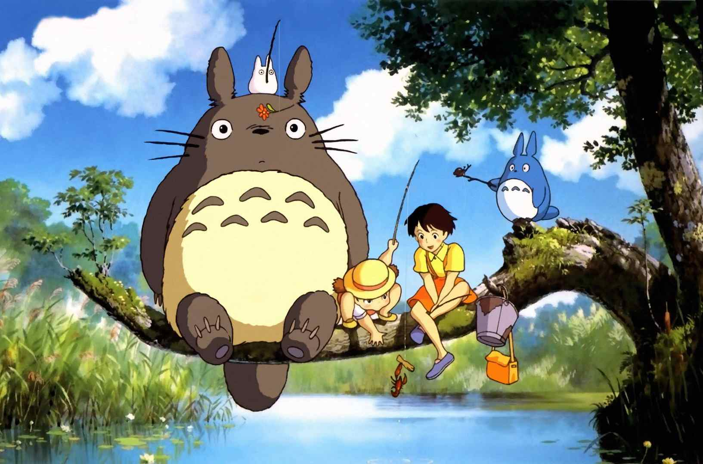

第一部分： CSS Transition
在CSS 3引入Transition（过渡）这个概念之前，CSS是没有时间变化的
鼠标移动到图片上查看效果1

鼠标移动到图片上查看效果2--过渡效果
- 1. hover 触发，鼠标移动到页面中触发
- 2. js动态更改对象的属性,属性更改之后css就能够改变其属性
transition的优点在于简单易用，但是它有几个很大的局限。
（1）transition需要事件触发，所以没法在网页加载时自动发生。
（2）transition是一次性的，不能重复发生，除非一再触发。
（3）transition只能定义开始状态和结束状态，不能定义中间状态，也就是说只有两个状态。
（4）一条transition规则，只能定义一个属性的变化，不能涉及多个属性。
（1）transition需要事件触发，所以没法在网页加载时自动发生。
（2）transition是一次性的，不能重复发生，除非一再触发。
（3）transition只能定义开始状态和结束状态，不能定义中间状态，也就是说只有两个状态。
（4）一条transition规则，只能定义一个属性的变化，不能涉及多个属性。